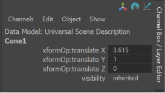
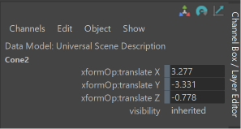

Work with USD Data in the Channel Box

Tip:
Selecting the option box with a Channel Box prim open will switch to the Attribute Editor with that same prim being displayed.
Channel Box Attribute Support
The following USD attribute types are supported by the channel box: Int, Float, Double, Int3, Float3, Double3, Boolean and EnumString.
- For the single types (those without the "3") a single row is displayed for each attribute name (and one value is needed for the setAttr command).
- For the vector types (those with "3") there will be three rows pertaining to each axis value, and thus each of those attribute names will have X/Y/Z appended to them.
- These prims will be handled as a vector and hence, you cannot set just one value. So when you edit one of them, it will have to set all three (with the other two being set to their current value). The
setAttrcommand will echo three values.
- These prims will be handled as a vector and hence, you cannot set just one value. So when you edit one of them, it will have to set all three (with the other two being set to their current value). The

- Important: When you edit any attribute value that matches, it will set that value on every selected object that has that attribute. In the Script Editor you will see multiple
setAttrcommands. These commands all undo or redo as a single block. - USD Data attributes in the Channel Box have no minimum or maxmimum value.
- You can select multiple prims and edit mutiples of USD data with the Channel Box, just as you can with Maya data. Ex: If you select two prims that have the same attribute (such as "xformOp:translate". The object name will have "..." appended to it and Object menu will show (up to 10) selected objects.
- Use arithmetic options with USD data in the Channel box (ex: "+=3") and relative percentage arithmetic operations (ex: "*=5%") to ease your workflow.
- Scrub channel box values by dragging left or right with your mouse and clicking with your left mouse button. You can also select an attribute name (or names) in the channel box (left-hand column) and use the middle mouse button over the viewport while dragging your mouse left or right. For both these modes you can hold SHIFT to scrub faster (by 10.0) and CTRL to scrub slower (by 0.1). These will echo a Maya
setAttrwhen you release the mouse. You can also have multiple Ufe items (such as USD prims) selected and it will affect all of them that have matching attribute. Prims of the same type that share attributes as the last selected will all scrub values together.
Lock USD Attributes in the Channel Box
You can right-click an attribute in the Channel Box to choose to Lock Selected or Unlock Selected. Locked attributes display with a traditional "grey bar" to the left of the field as displayed below and the attribute cannot be modified.

Using the Command line for the Channel Box
- In the Script Editor, for "channelBox" command, run the following:
- Use the flag
-ufeFixedAttrListto control what attributes to display in Maya. Initially this value is empty for every runtime. MayaUSD sets it to "xformOp:translate*", "xformOp:rotate*", "xformOp:scale*", "xformOp:*", "visibility". Query this flag like so:channelBox -q -ual "USD" {} mainChannelBox;
- Query the currently displayed object(s) in the channel box:
channelBox -q -mainObjectList mainChannelBox;
- Make "setAttr" command UFE aware. Currently none of the flags are supported. Some example uses are:
setAttr "|stage1|stageShape1,/Capsule1.xformOp:rotateY" 30 ;setAttr "|stage1|stageShape1,/Cone1.xformOp:translate" 3 5 0 ;
- Use the flag